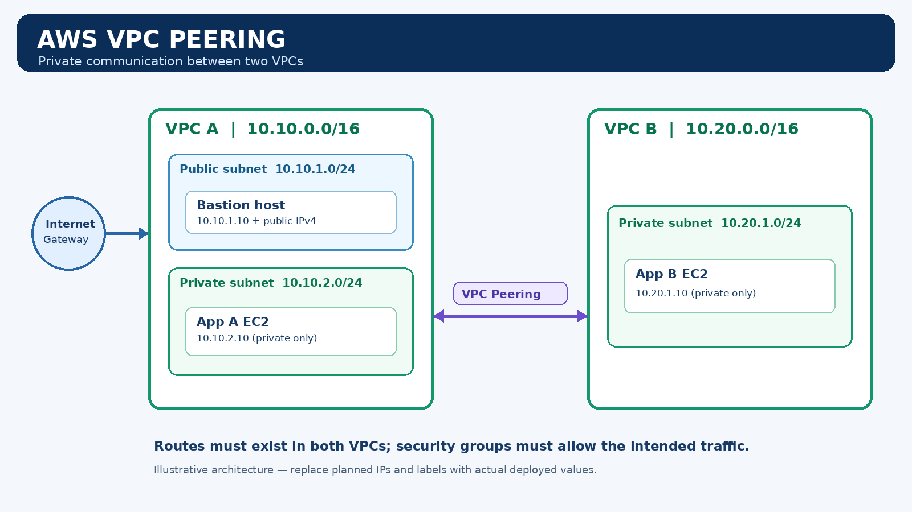

Implementation status: This is a project template. Architecture is illustrative; AWS deployment and connectivity tests are not verified until the author replaces placeholders with their own evidence.
Architecture

VPC A uses 10.10.0.0/16; VPC B uses 10.20.0.0/16. Peering routes must be configured in both VPCs, and security rules must permit the intended traffic.
What this project demonstrates
VPC design
Non-overlapping CIDR ranges and subnet separation.
Non-overlapping CIDR ranges and subnet separation.
Routing
Internet Gateway for the bastion and private peering routes.
Internet Gateway for the bastion and private peering routes.
Security
Restricted SSH and ICMP rules using least privilege.
Restricted SSH and ICMP rules using least privilege.
Verification
Bidirectional ping, SSH testing, failure analysis, and recovery.
Bidirectional ping, SSH testing, failure analysis, and recovery.
Project files
Before presenting this as completed, add real screenshots from your AWS account and record observed test results.